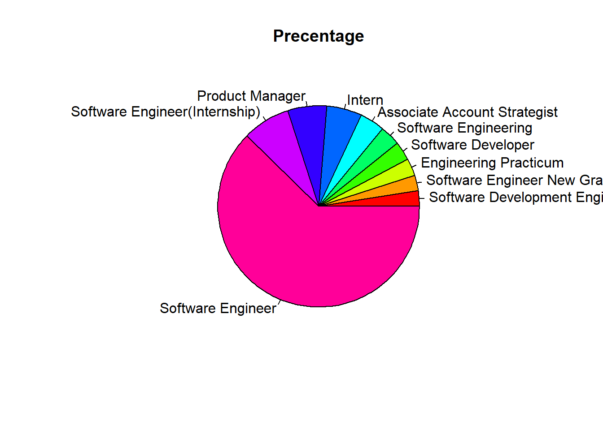

library(xml2)
library(rvest)
library(tibble)
library(purrr)
library(stringr)
library(dplyr)
library(lubridate)##### intreview_date function #####
intreview_date <- function(html){
html %>%
html_nodes(".empReview.cf") %>%
map_df(~list(date = html_nodes(.x,'.date.subtle.small') %>% html_text() %>% {if(length(.) == 0) NA else .})) %>%
unlist(use.names = FALSE)
}
##### review_title function #####
review_title <- function(html){
html %>%
html_nodes(".tbl.fill.reviewHdr") %>%
map_df(~list(title = html_nodes(.x,'.reviewer') %>% html_text() %>% {if(length(.) == 0) NA else .}))
}
##### intreview_location function #####
intreview_location <- function(html){
html %>%
html_nodes('.tbl.fill.reviewHdr') %>%
map_df(~list(location = html_node(.x, '.authorLocation') %>% html_text() %>% {if(length(.) == 0) NA else .}))
}url <- "https://www.glassdoor.com/Interview/Google-Interview-Questions-E9079_P%d.htm"
last_page <- 1000
pages_url <- str_c(sprintf(url,1:last_page))
pages_url <- gsub("_P1.htm",".htm",pages_url)
pages_url[1]## [1] "https://www.glassdoor.com/Interview/Google-Interview-Questions-E9079.htm"pages_url[last_page]## [1] "https://www.glassdoor.com/Interview/Google-Interview-Questions-E9079_P1000.htm"map_df(1:last_page,function(i){
cat(".")
page_html <- read_html (pages_url[i])
Dates <- intreview_date (page_html)
Title <- review_title (page_html)
Location <- intreview_location (page_html)
data.frame(Dates,Title,Location,stringsAsFactors = FALSE)
}) -> result## ........................................................................................................................................................................................................................................................................................................................................................................................................................................................................................................................................................................................................................................................................................................................................................................................................................................................................................................................................................................................................................................Dates <- as.Date(result$Dates," %B %d, %Y")
Year <- as.numeric(format(Dates,'%Y'))
y <- table(Year)
par(mar=c(7,4,1,0.1))
barplot(y, args.legend = list(x ='top'), ylab = "Counts", cex.axis=1.0, cex.name=1.0, las=2, lwd=2, beside=TRUE)x <- tail(sort(table(result$title)),10)
pie(x, main="Precentage", col = rainbow(length(x)))
x <- tail(sort(table(result$location)),10)
pie(x, main="Precentage", col = rainbow(length(x)))